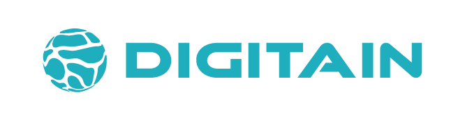
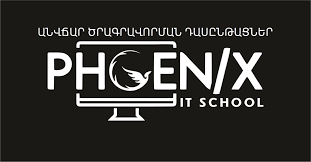

Աշխատել եմ որպես Detection Engineer՝ տեղեկատվական անվտանգության մասնագետ Digitain ընկերությունում, որտեղ զբաղվել եմ վտանգների հայտնաբերմամբ, անվտանգության միջադեպերի վերլուծությամբ և SOC գործառնություններով իրական կորպորատիվ միջավայրում։
2020-2024 թվականներին ես հիմնադրել և ղեկավարել եմ իմ սեփական ուսումնական կենտրոնը՝ Phoenix IT School, մինչև 50 սովորողով և 2-3 դասավանդողից բաղկացած թիմով, ինքս զբաղվելով ծրագրերի մշակմամբ և ամբողջ կրթական գործընթացով։ Այնպես որ սովորեցնելը ինձ համար նոր բան չէ։
Ծրագրավորումը, այդ թվում՝ Python-ը, իմ ամենօրյա աշխատանքային գործիքն է, ոչ թե պարզապես տեսական գիտելիք։
3-4 տարի առաջ, փնտրելով լավագույն տարբերակը՝ ինչպես լավագույնս սովորեցնել Python 12-16 տարեկաններին, ես հանդիպեցի code.mu կայքին։ Առաջին իսկ պահից հասկացա՝ սա ճիշտ լուծումն է։
Ես անձամբ ստացա կայքի հեղինակի թույլտվությունը այն օգտագործելու համար։ Քանի որ կայքը սկզբում միայն ռուսերեն էր, ես ինքս՝ ձեռքով, Google Translate-ի և DeepL-ի օգնությամբ, ամբողջությամբ թարգմանեցի այն հայերեն։
Ես գիտեմ այս կայքի ամեն մի բառը և ամեն մի տրամաբանությունը՝ ներսից։
Ամբողջական նյութեր, կառուցված մակարդակներով՝ սկսնակից մինչև առաջադեմ։
Առաջադրանքների, թեստերի ու նպատակների գործընթացի մասին կխոսենք առանձին։
Հենց առաջին դասից ես հատուկ ուշադրություն եմ դարձնում մեկ բանի վրա՝ ծանոթանալ նրանց հետ, ովքեր նստած են իմ դիմաց։ Ինքս ինձ պետք է ներկայացնեմ այնպես, որ մի փոքր ինտրիգայի մեջ գցեմ, հետաքրքրություն ստեղծեմ․ եթե հենց սկզբից չհետաքրքրես, հետո դա անելը շատ ավելի դժվար է լինում։ Հենց այդ հետաքրքրությունն է, որ հետագայում իրենք իրենց մոտիվացնում է։
Այս ողջ ներկայացման ընթացքում ես գիտակցաբար չեմ օգտագործում «երեխա» կամ «աշակերտ» բառերը։ Փորձը ցույց է տվել՝ դա բացասաբար է ազդում շփման վրա, իսկ շփումը ինձ համար ամենակարևորն է։
Կարևոր է ցույց տալ իրական օրինակներ՝ ինչ եմ արել, ինչ նախագծեր ունեմ, ինչ գիտեմ կորպորատիվ միջավայրի մասին. և հասկանալ՝ իրենք ինչ գիտեն ծրագրավորողների մասին։
Շատ կարևոր է շոշափել նրանց սահմանները՝ կախված յուրաքանչյուր աշակերտից, հասկանալ՝ ինչպես են տիրապետում պարզագույն հմտություններին. կարողանում են արդյո՞ք ձևակերպել հարց, թե ինչպես նրանց դեպի դա հրել։
Այս ամենը հասկանալու համար ես նախատեսում եմ նվազագույնը 2 թեստային առաջադրանք։
Ո՞րտեղ ես քեզ պատկերացնում 5-10 տարի անց
Հենց այս հարցին է, հնարավոր է, որ նրանք առաջին անգամ պատասխանում են հենց այստեղ՝ 1-ին դասին։
Մնացածը ես ինքս ցույց կտամ ու կպատմեմ։